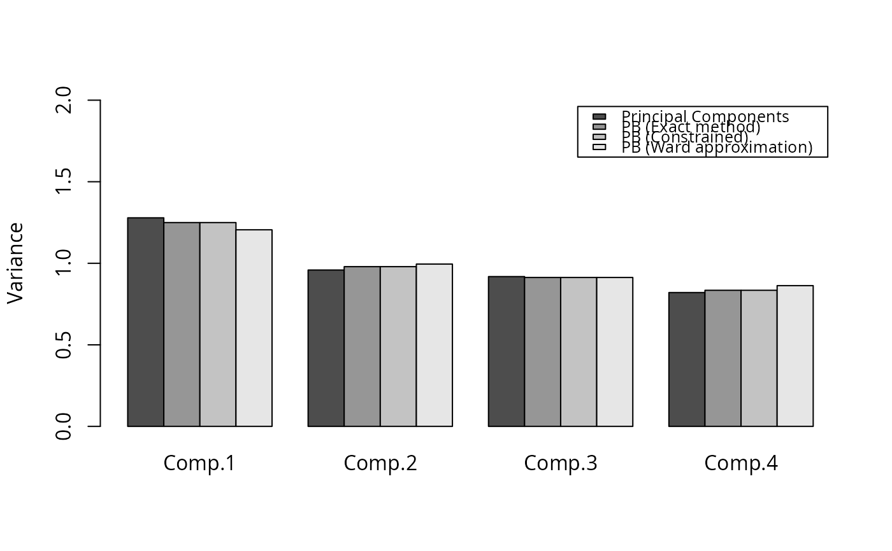

Exact method to calculate the principal balances of a compositional dataset. Different methods to approximate the principal balances of a compositional dataset are also included.
pb_basis(X, method, cluster.method = "ward.D2", ordering = TRUE, ...)compositional dataset
method to be used with Principal Balances. Methods available are: 'exact', 'constrained' or 'cluster'.
Method to be used with the hclust function (default: `ward.D2`) or any other method available in hclust function
should the principal balances found be returned ordered? (first column, first principal balance and so on)
parameters passed to hclust function
matrix
Martín-Fernández, J.A., Pawlowsky-Glahn, V., Egozcue, J.J., Tolosana-Delgado R. (2018). Advances in Principal Balances for Compositional Data. Mathematical Geosciencies, 50, 273-298.
set.seed(1)
X = matrix(exp(rnorm(5*100)), nrow=100, ncol=5)
# Optimal variance obtained with Principal components
(v1 <- apply(coordinates(X, 'pc'), 2, var))
#> pc1 pc2 pc3 pc4
#> 1.2786668 0.9586414 0.9184489 0.8206021
# Optimal variance obtained with Principal balances
(v2 <- apply(coordinates(X,pb_basis(X, method='exact')), 2, var))
#> pb1 pb2 pb3 pb4
#> 1.2496333 0.9793411 0.9129399 0.8344449
# Solution obtained using constrained method
(v3 <- apply(coordinates(X,pb_basis(X, method='constrained')), 2, var))
#> pb1 pb2 pb3 pb4
#> 1.2496333 0.9793411 0.9129399 0.8344449
# Solution obtained using Ward method
(v4 <- apply(coordinates(X,pb_basis(X, method='cluster')), 2, var))
#> pb1 pb2 pb3 pb4
#> 1.2052867 0.9951299 0.9129399 0.8630027
# Plotting the variances
barplot(rbind(v1,v2,v3,v4), beside = TRUE, ylim = c(0,2),
legend = c('Principal Components','PB (Exact method)',
'PB (Constrained)','PB (Ward approximation)'),
names = paste0('Comp.', 1:4), args.legend = list(cex = 0.8), ylab = 'Variance')
